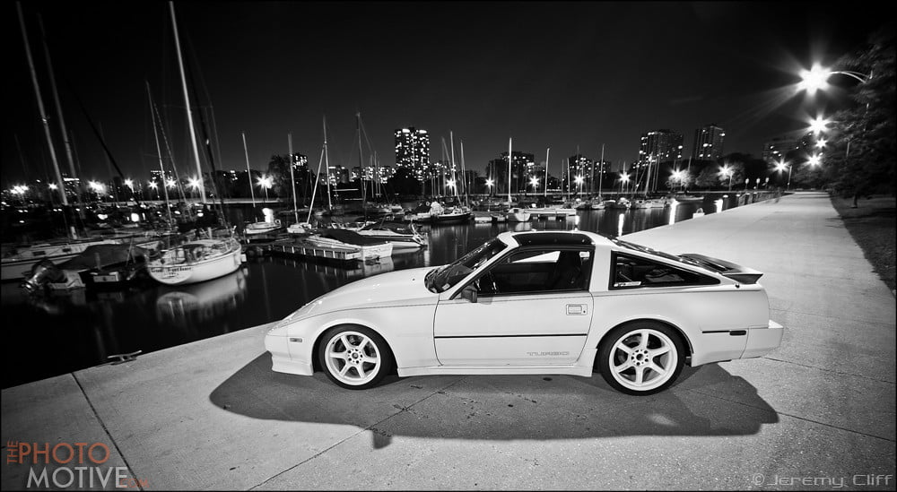
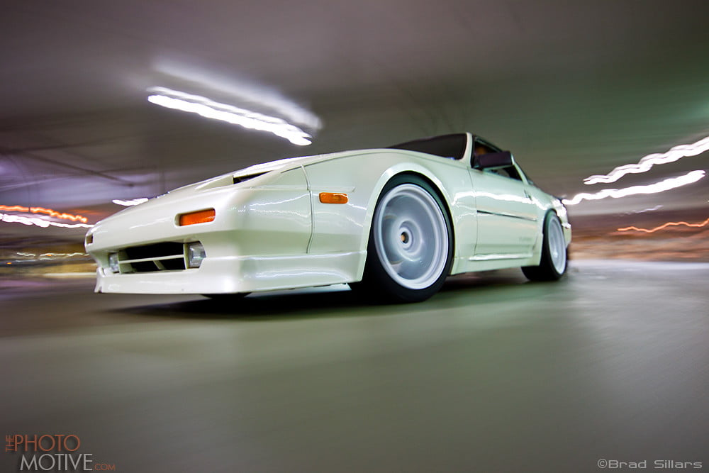

-
I tried googling stuff and I know AZ-Bum had a thread but my stupid phone doesn't let me open the site, I don't know why.
I also tried to find a forum here on Z31 as well and no luck. I want to order some Wheel from DWS in Dallas TX, but I want my wheel to POKE out a bit. Can anyone please be kind enough to assist me on the wheel spec to reach my GOAL?
I don't want any spacer if possible.
17x9 (front)
17x10 or 17x10.5 if possible
I am not sure on the OFFSET I will need for the front nor the Rear…
NOTE: I will be ordering some STANCEUSA Coil Overs soon as well, THANK To my INCOME TAX and medical check I got..
Thank ahead of time for taking the time… -
I have a 1987 Z31 Turbo -
I think his site is being updated or something, it's down. You can try a cached version, like this https://web.archive.org/web/20150721…nd.tires.shtml -
Waste your money on whatever you want, even if it's a shitty choice that makes you stretch hard and look like a goofy D21 rocking American Racing wheels. I'd suggest a computer to browse like normal people.
F: -15mm ~ -30mm
R: -10mm ~ -15mm
dont forget your chulo costume and reggaton sound track while your fenders eat tires -
17x10 +20 rears will be flush any less offset requires major roll and pull -
What are you looking at for alignment specifications. Whatever it takes to make it work, or something reasonable. Are you correcting rear camber and toe?86na - BlueZ
Shiro #366 - Kouki Monster
85t - Mr Tickles -
88Sinz, I've never had a problem with you, but if I remember correctly we joined these forum for Help. Even if is a dum question, that why we are all here. I know I'm not as knowledgeable as you, but I'm asking because yes I've tried looking up this information. I live far from the city (Ranch home & No Internet) and only 1 friend, I use my phone for internet. At work I do have a computer with limited access since I work in a Prison and work long hours (8-16hr). No need for racist jokes since I do have a part Latino in me. NOTE: little is document on Z31 wheel Specs to see what other Z Owners are doing. AKA Crap/Butter is just 1 of the few who has his wheel more less how I want. However I looked at his tread and offsets has no info. -
I want my rim to stick out a bit, I will try to post pic of what other cars are doing. But something similar to have the rim a bit out from the fender with stretch tires. I talk to the wife about it lol and I called DWS in Dallas for some Work S1 for pricing, I'm going to use one of my Credit cards to purchase them. But if it really does look retarded than I Take 88Sinz advise LOL and go flush. Thank you for your time and I don't mean to take it from you.. I really do greatly appreciate you'll advise on wheel spec because it does take time to answer some noob questions.Originally posted by adamvann3 View Post -
Something reasonable with some good deep dish…Originally posted by adamvann3 View Post -
_20160218_000835.jpg_20160218_000820.JPG
I want my rear and front setup like this, please help in any advise to reach my goal, I think 17 inch all around would be a nice setup but feedback will be consider, yes even negative.
AZ has nothing on 17x10 on the rear, not sure the reason. I have a set of 17x9 front with spacer and 17x10 with no spacer. But I don't like the spacer idea.. I will eventually upgrade my rear Sub frame if this info helps. -
Sorry for resurfacing this post again, but still lost and exactly how would it look.
I'm think 17 or 18..
?x9 +10 Front
?x10 +5 Rear
If you can please post your ride with wheel spec.
Thank you -
there's a good bit of proper fitment if you dig around enough wheel calculators and can understand OEM fitment compared to aftermarket.
It's not some divisive racist jaunt, the people you see with shit fitment are the people we all don't need running around our streets… as is the reason for safety inspections, look into antique registration if you want to deviate from (hopefully) state standards -
If you plan to swap subframes, I think you will want to run a spacer/adapter in the rear, lest you have to buy new rear wheels to fit. The S13/S14 rear suspension pushes the hubs further out than stock, and if memory serves so does the Z32. R32 rear suspension is very similar in width to the Z32, at least according to the ol' MK1 Optical Size Measurers (eyeballs). I'd ask one of the guys with the rear suspension you plan to get what offset they run to be flush. Look at their pictures, take their advice, then take a measuring tape to the car.
Or show the pics and specs to the shop, and have them do it for you.Feedback- viewtopic.php?f=18&t=19840

-
What you're requesting is going to take a lot more than just installing coilovers and bolting on wheels. To achieve to really try to get it close with wheel and tires than dial everything with alignment and fender work. Alignment in the front will not be too bad, there are significant amount of aftermarket support and bolt on ready parts to get you there. The rears however will be a PITA. No way around it, caster, camber and toe get horrible the lower you go. The amount of correction needed gets more and more complicated and labor intensive the lower you go.
Personal opinion being through about 10 sets of wheels and various fitments over the years.
17x9 + 0 effective with 235/40 tires. You can go with 9.5 as well with lesser offset and use 255 tire, but 9 wide and 235/40 are a really nice combination in the front. I would actually go with +15 offset and use spacers to push it out to zero. Some wheel designs do not offer a really good spoke to caliper clearance, so spacers give you the extra assistance in this department. This will not achieve your poke look but give you something flush, minimal fender work with -2 degrees of camber. Looks good, very functional.
Rears, 17x9.5 - 10.5 +15 with 255/40 tires. You can actually fit a lot less offset in the front compared to the rear with the semi trailing rear. Even less with multilink later on.
Both will just require you to roll your fenders, lower your car to give it a transformation, a lot of function and forgiveness.


Wheel choice. I love me some Miester S1. Awesome wheel, however to pull them off you are going to need some monster negative offset to give you the lip desired. Even more you will need to run some very skinny tires to pull it all together, or fender work to get everything dialed in. It can be done, do not get me wrong but it will be a journey to get everything as desired with out making your car look ratchet.
Having various sets of multi piece wheels, I have come back full circle to mono blocks. The simplicity, spoke to brake clearance, variety (not to mention way fairer pricing), and performance (weight) has some large benefits. While you will not get that big lip look with monoblocks everything else out weighs. Gramlights, Volk, Work all have some stout line ups. Always thought some weds TC105n would always look good as well.86na - BlueZ
Shiro #366 - Kouki Monster
85t - Mr Tickles -
Thanks Adam, very helpful… That z31 is the exactly how I want mine. I'm test fitting some wheels and will post pic once I'm done.

Copyright © 2006–. All rights reserved. Privacy Policy